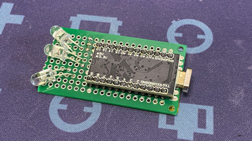
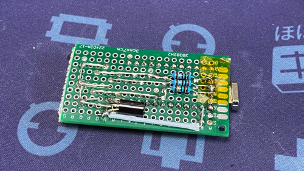
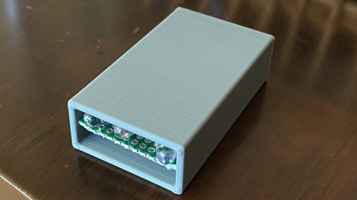

ProMicroで定期送信リモコンを作る
時々、家のヒーターが勝手に切れてしまうようになった。
（主電源は切れておらずリモコンでオフになっている状態）
修理するにしても、時間がかかるためもうちょっと暖かくなってから修理に出したい。
消えているのを確認するたびに手動でリモコンでONにするのが非常にめんどくさいので、応急処置で定期的にONにする装置を作ってみた。
（安全性の問題はあるので、諸々気をつけて使ってはいます）
// どうでもいいけど、リモートワークで電気代が非常に辛い。
目的
ヒーターが勝手に消えてしまうので、定期的にONにする信号を送れるようにする
要件
- MUST
- 定期的にヒーターONの信号を送る
- 定期送信のON/OFFができる
- WANT
- 複数の信号を切り替えられるようにする（あんまユースケースがないのでやらなそう）
必要なもの
- リモコンのデータを受信して解析してデータを作る
- 赤外線を送出する
- 定期的に実行する
- on/offできる
背景
キーボードは自作しているが、電子工作関連の知識が絶対的に足りないのでarduinoとかいじっていこうかなと思い、書籍を読んだり、書籍で紹介されている回路に必要なものを買ったりしているところだった。 必要になった事を学習していくほうが覚えは早いので、これは良い題材かなと乗っかったというのが大きい。
ログ
ベース
- arduino IDEなどを入れてコンパイル→書き込みくらいはやっていたのでその辺はOK
- 電子工作関連の積みの中からリモコンを扱ったやつを発掘
- sLab-Remo2 | sLab学習サイト
- これをベースにやっていくことに。
- ESP32-DevKitCというESPの開発ボードを使っているので、これでやっていく
受信
- 受信回路は2-1-5.赤外線リモコン受信をまんま利用させてもらった
送信
- 送信回路も基本的には2-1-6.赤外線リモコン送信でOK
ProMicro化
あっさりと基本的な事はできてしまった。ありがたい。
ただ、ブレッドボードを使っていて安定して使うのには難がある。 開発ボードもこれに使うのはもったいない。 ということで、家に大量にあるProMicroに置き換えることに。 arduinoベースなので、さっくりいくかと思ったら意外にハマった。
まずは同じくブレッドボード上で回路を構築していくが、なぜか機器が作動しない。 何か信号を受け取っているような表示はされるのだが動かない。 この辺のデバッグに慣れていないので、一苦労。
初めは出力が足りないのか、信号がちゃんと送れてないかなど調べていったがどうにも大丈夫そうな気がする。回路をあちこちいじるも変わらず。
「Pro Micro 赤外線LED」とかで検索していると、 Arduino M0 Proで赤外線LEDを使いたいときdelayMicroseconds()は絶対に信じてはいけない - Qiita な記事を見つけた。
ひとまずサクッとプログラムを置き換えてみると動いた・・・
差分を追ってみると、waitしているところは同じ処理だが、周期を作るためのwaitの時間が違う。こういうのデバッグするのにオシロスコープとかあると良いのだろうな。（格安のが積んであるので、まずはこれをちゃんと使えるように。多分そのうちRIGOLのとか買っちゃいそうだが）
まあ細かいところは追ってみていくとして、ひとまずProMicro化もできた！
wait時間を増やす
テストのためにdelay(1000)とかで1秒おきに送信するのはできていたのだが、delay(1000*60*5)と5分おきにするとどうも最初の一回しか動かない・・・
これも調べていくと、 Arduino IDE(delay関数の使い方) - NOBのArduino日記！ な記事を見つける。
補足 ：このパラメータはunsigned long型です。32767より大きい整数を指定す
るときは、値の後ろにULを付け加えます。 例 delay(60000UL);
お、おう。。 基本Cとかベースにしていると思うのだが、Cもガッツリはやっていないので、こういうのが普通なのかよくわからない。コンパイルエラーにはならないのか。
まあ、気を取り直して修正したら無事定期実行ができるように！
ユニバーサル基板化
ProMicroで動くことは確認できたので、小型化とちゃんとハンダ付けするためにユニバーサル基板へと移設。 手頃な大きさの基板に何となく回路図を再現していく。 まあテンポラリだしこんなもんで良いか。 部品がついている状態で基板を切断するのが大変だったので、ちゃんと事前に設計して切り落としておけば良かった。
あと、USBコネクタをガッツリショートさせてしまっていたので、ハンダ吸い取ってカプトンテープを挟んで対処。 ちゃんとしておかねば・・・


ケース
裸のままなのも何なので、適当に 3Dプリンタでケースを作って格納。 赤外線LEDはもうちょっと露出させたほうが角度が稼げるので、後で作り直すかもしれない。 あと、ちゃんと真っ直ぐ保持できるように基板にそって溝でもつけておきたい。 毎度ながらまずは適当に作ってしまう派。

まとめ
というわけで、とりあえず動くものができた。 on/offのスイッチを作りたいところだけど、もうハンダ付けしてめんどいし、ProMicroはマグネットケーブルで繋いでいるので、それで良いかと。
ちょこちょこハマったけど、デバッグしていくと知識がついていくのでこれぐらいがちょうど良さそうな気もする。キット作っていくだけだと色々流れていってしまうので。